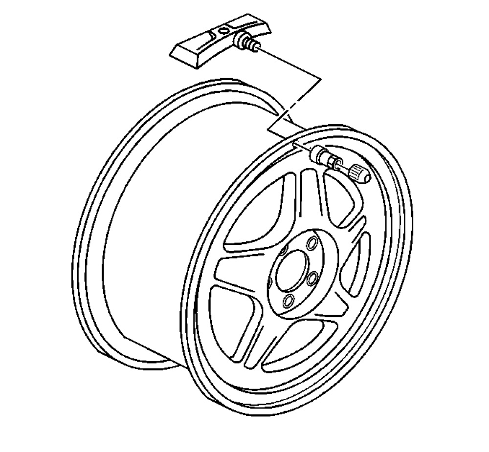
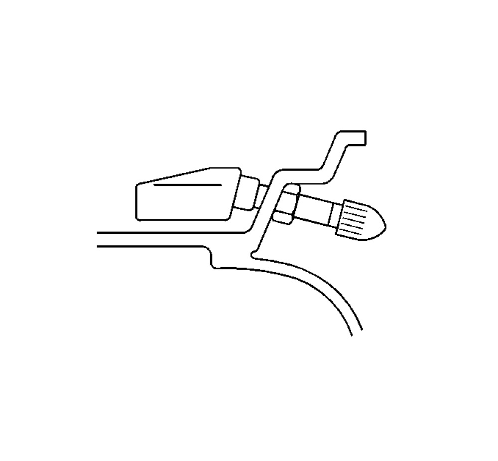

Tire Pressure Sensor Replacement (Clamp In Style)
Tire Pressure Indicator Sensor Replacement (Clamp In Style)
Removal Procedure
1. Raise the vehicle on a suitable support.
2. Remove the tire/wheel assembly from the vehicle.
Important: Before the tire is removed from the wheel, note the following items to avoid tire pressure sensor damage upon tire dismounting:
- Place the sensors cap and valve on a dry clean surface after removal. The cap is aluminum and the valve is nickel plated to prevent corrosion and are not to be substituted with a cap or valve made of any other material.
- When separating the tire bead from the wheel, position the bead breaking fixture 90 degrees from the valve stem.
- Position the mounting/dismounting head so the tire iron, or pry bar can be inserted slightly clockwise of the sensor body when prying the tire bead up and over the mounting/dismounting head.
- Using the tire machine, rotate the tire/wheel assembly clockwise when transferring the tire bead to the out side of the wheel rim.
- Repeat items for inner bead.
3. Remove the tire from the wheel. Refer to Tire Dismounting and Mounting .

Important: If any tire sealant is noted upon tire dismounting, remove all residual liquid sealant from the inside of the tire and wheel surfaces.
4. Remove the tire pressure sensor nut.
5. Remove the tire pressure sensor.
Installation Procedure
1. Clean any dirt or debris from the grommet sealing area.

2. Insert the sensor in the wheel hole with the air passage facing away from the wheel.
Notice: Use the correct fastener in the correct location. Replacement fasteners must be the correct part number for that application. Fasteners requiring replacement or fasteners requiring the use of thread locking compound or sealant are identified in the service procedure. Do not use paints, lubricants, or corrosion inhibitors on fasteners or fastener joint surfaces unless specified. These coatings affect fastener torque and joint clamping force and may damage the fastener. Use the correct tightening sequence and specifications when installing fasteners in order to avoid damage to parts and systems.
3. Install the sensor nut and position the sensor body parallel to the inside wheel surface while torquing.
Tighten
Tighten the sensor nut to 7 Nm (62 lb in).
Important: Before reinstalling the tire on the wheel, note the following items to avoid tire pressure sensor damage upon tire mounting:
- Position the mounting/dismounting head 180 degrees from the valve stem.
- Position the bead transition area 45 degrees counterclockwise of the valve stem.
- Using the tire machine, rotate the tire/wheel assembly clockwise when transferring the tire bead to the inside of the wheel rim.
- Repeat items for outer bead.
4. Install the tire on the wheel. Refer to Tire Dismounting and Mounting .
Important: A service replacement tire pressure sensor is shipped in OFF mode. In this mode the sensor unique identification code cannot be learned into the remote control door lock receiver (RCDLR) memory. The sensor must be taken out of OFF mode by spinning the tire/wheel assembly above 32 km/h (20 mph) in order to close the sensors internal roll switch for at least 10 seconds.
5. Install the tire/wheel assembly on the vehicle.
6. Lower the vehicle.
7. Learn the tire pressure sensors. Refer to Tire Pressure Indicator Sensor Learn .